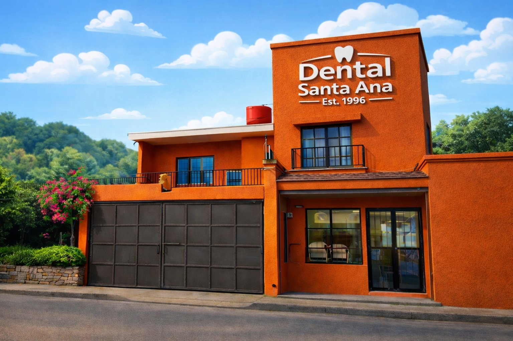
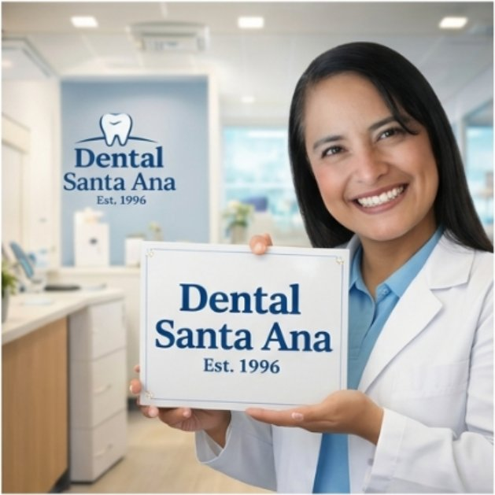
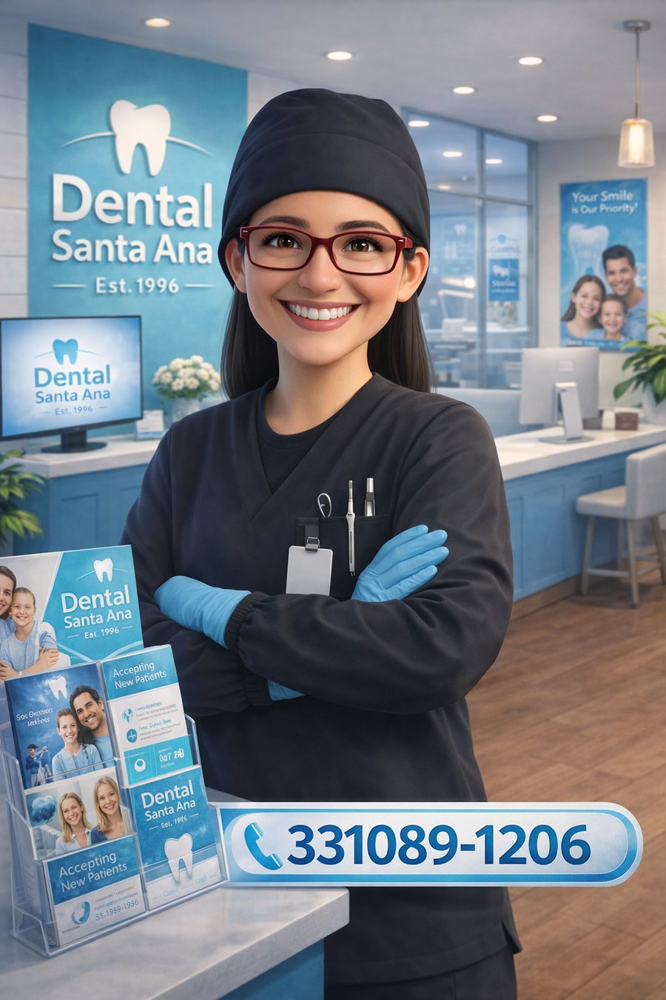

Tu sonrisa saludable comienza en Dental Santa Ana
Odontología general, ortodoncia y ortopedia maxilar con atención cálida y personalizada, dirigida por la Dra. Flor de Liz Bistrain.
30+
Años de experiencia
9
Servicios dentales
7
Días de atención a la semana
3+
Años, edad mínima de atención

Cuidando sonrisas en Guadalajara desde 1996
En Dental Santa Ana, dirigidos por la Dra. Flor de Liz Bistrain, combinamos casi tres décadas de experiencia en odontología general con una especialidad en ortodoncia y ortopedia maxilar, incluida la colocación de tornillos de titanio para ortodoncia.
Nuestro consultorio está equipado con protocolos de esterilización con autoclave, soluciones desinfectantes y calor seco, para brindarte una atención segura en cada visita.
Todo lo que tu sonrisa necesita
Consulta general
Revisión y diagnóstico completo de tu salud bucal.
Limpieza dental
Eliminación de placa y sarro para prevenir enfermedades bucales.
Extracciones
Extracción de piezas dentales con anestesia adecuada a cada paciente.
Resinas y restauraciones
Recuperamos la forma y función de dientes dañados por caries.
Endodoncia
Tratamiento de conducto para salvar piezas con daño en la pulpa dental.
Prótesis dentales
Prótesis fijas y removibles para recuperar tu sonrisa completa.
Blanqueamiento dental
Aclaramos el tono de tus dientes de forma segura y profesional.
Odontopediatría
Atención dental especializada para los más pequeños de la casa.
Ortodoncia
Brackets y ortopedia maxilar para alinear tu sonrisa a cualquier edad.
Ortodoncia y ortopedia maxilar
Alineamos tu sonrisa con tratamientos de ortodoncia y ortopedia maxilar para todas las edades, incluida la colocación de tornillos (implantes de titanio) que ayudan a anclar y optimizar tu tratamiento ortodóncico.
Acompañamos cada caso con una evaluación personalizada para definir el mejor plan de tratamiento para ti o tus hijos.
Pregunta por tu tratamiento
Pensamos en cada tipo de paciente
Mujeres embarazadas
Utilizamos anestesia especial segura para pacientes embarazadas.
Pacientes diabéticos
Los atendemos cuando su glucosa está controlada, con anestésico apropiado.
Silla de ruedas
Contamos con rampas de acceso para recibir a pacientes con movilidad reducida.
Desde los 3 años
Los menores de edad son bienvenidos siempre acompañados de un tutor o padre de familia.
Preguntas frecuentes
Información general
Somos Dental Santa Ana, dirigidos por la Dra. Flor de Liz Bistrain. Desde 1996 brindamos odontología general y contamos con especialidad en ortodoncia y ortopedia maxilar, así como colocación de tornillos (implantes de titanio) para ortodoncia.
Guadalupe Victoria 71, Zapopan sur, Guadalajara, Jalisco, C.P. 45230, México.
Servicios y especialidades
Consulta general, limpieza dental, extracciones, resinas/restauraciones, endodoncia, prótesis dentales, blanqueamiento dental, odontopediatría y ortodoncia.
Ortodoncia y ortopedia maxilar, incluida la colocación de tornillos para ortodoncia (implantes de titanio).
Horarios y citas
Lunes a viernes de 10:00 a 19:00 hrs, sábados y domingos de 9:00 a 16:00 hrs. Días festivos y vacaciones, solo con cita.
Por WhatsApp o llamada al 33 1089-1206.
Costos y pagos
La consulta tiene una duración aproximada de 1 hora y un costo de $230 MXN.
Aceptamos efectivo y transferencia bancaria. Sí emitimos factura; solicítala al agendar tu cita y proporciona tus datos fiscales.
Atención a pacientes especiales
Sí, utilizamos anestesia especial segura para pacientes embarazadas.
Sí, siempre que la glucosa esté controlada; usamos anestésico apropiado para pacientes diabéticos.
Sí, contamos con rampas de acceso para silla de ruedas.
A partir de los 3 años. Los menores deben venir siempre acompañados de un tutor o padre de familia.
Emergencias y cuidados
Depende del caso; realizamos una evaluación previa para determinar la atención y el tratamiento adecuados.
Según cada caso, entre 4 y 6 meses.
Higiene, cuidados y recomendaciones
Empleamos autoclave, soluciones desinfectantes y calor seco para garantizar máxima seguridad.
La medicación varía de 7 a 14 días según el problema. Se recomienda no comer alimentos muy duros y evitar el uso de palillos.
Políticas adicionales
Por seguridad, no podemos atender casos no controlados; recomendamos acudir a un centro de salud especializado.
Agenda tu cita hoy mismo
-
Guadalupe Victoria 71, Zapopan sur, Guadalajara, Jalisco, C.P. 45230, México
-
WhatsApp o llamada: 33 1089-1206
-
Lunes a viernes: 10:00–19:00 hrs
Sábados y domingos: 9:00–16:00 hrs
Días festivos y vacaciones: solo con cita -
Pagos en efectivo y transferencia bancaria. Emitimos factura.